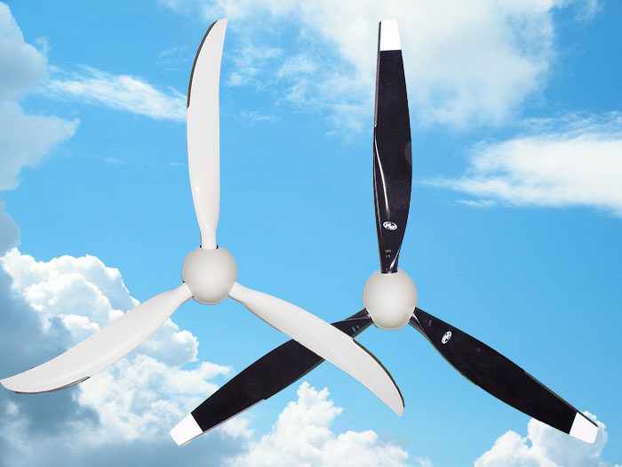

ЛугаПроп
Предприятие "ЛугаПроп" – производитель воздушных винтов для сверхлегкиx летательных аппаратов (СЛА): самолетов, дельталетов, автожиров, парапланов. Коллектив нашего предприятия состоит из группы специалистов, которые имеют многолетний опыт работы с композиционными материалами.
Предприятие "ЛугаПроп" с 2003 года занимается разработкой, проектированием, изготовлением и испытаниями своих изделий.
Мы сотрудничаем с производителями летательных аппаратов как в Украине, так и за рубежом. Благодаря информации, поступающей от наших клиентов, производится анализ потребительского рынка с целью улучшения качества продукции. Наивысшее качество продукции и забота о каждом нашем клиенте являются главными задачами в деятельности предприятия "ЛугаПроп".
Модельный ряд представляют 2-, 3-, 4- и 5-лопастные воздушные винты, диаметром от 400 мм до 1860 мм, с углепластиковыми лопастями. Воздушные винты предназначены для установки на двигатели от 5 л.с. до 130 л.с.
Прочностные испытания были проведены в лаборатории прочности ХАИ, при активной помощи специалистов Восточноукраинского национального университета им. В. Даля.
Продукция защищена пaтентами.
